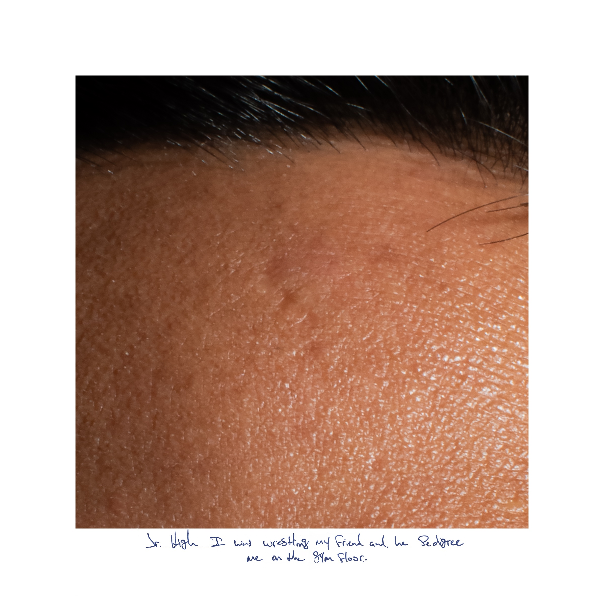
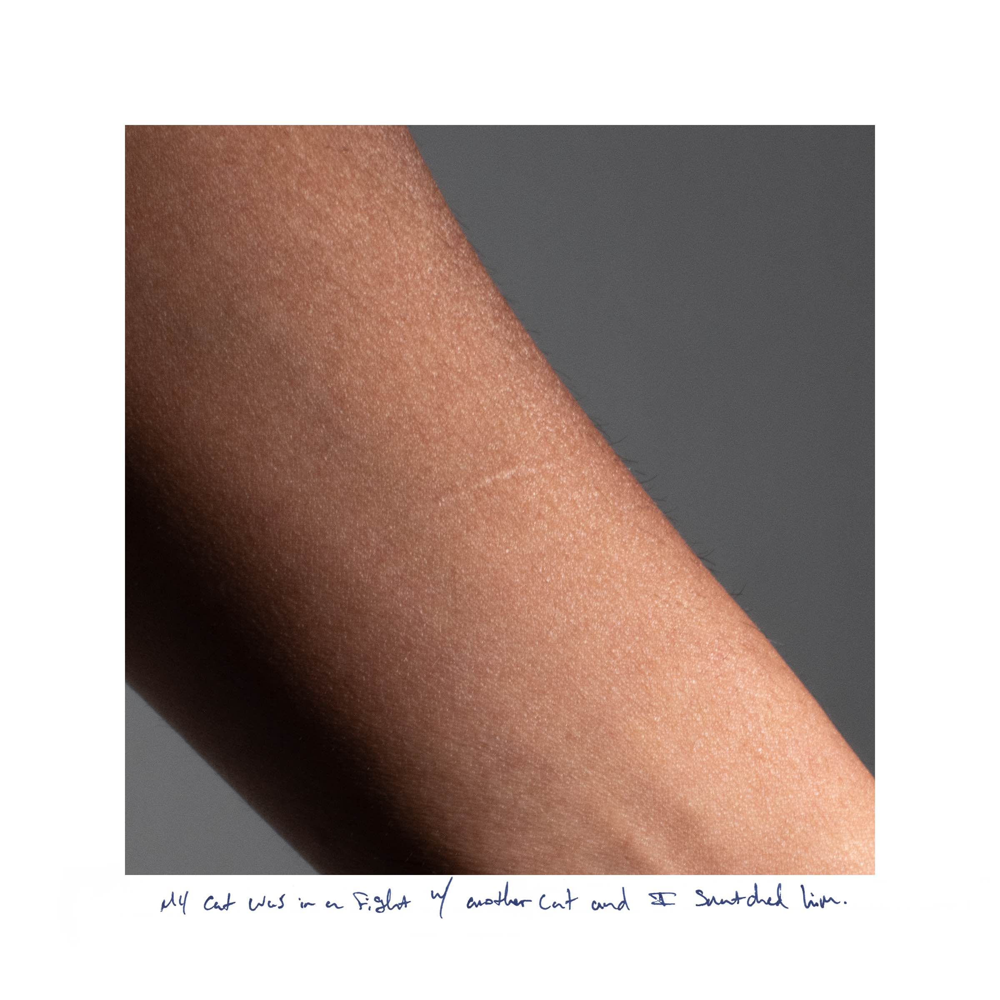
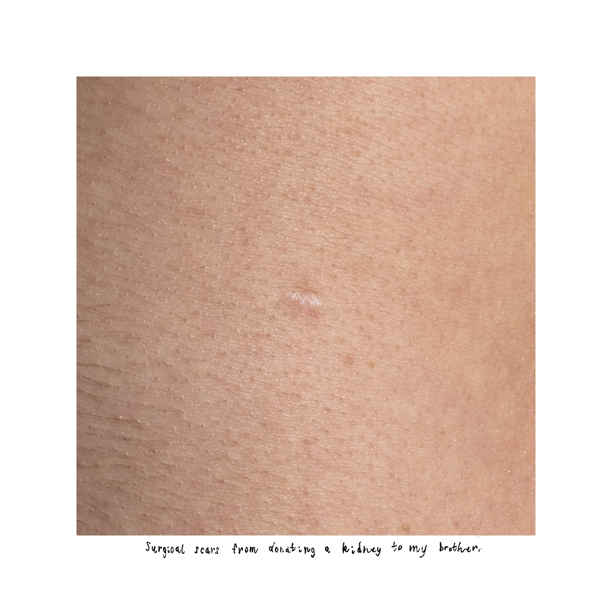
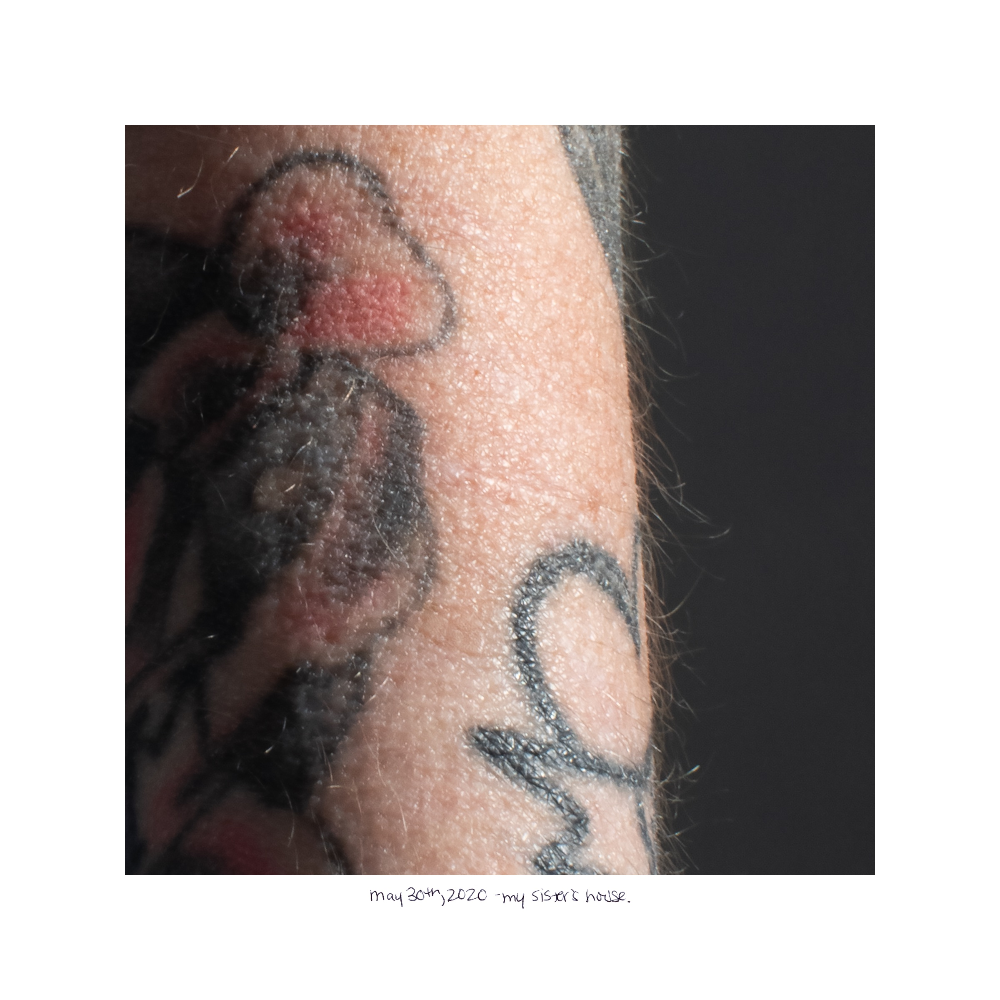
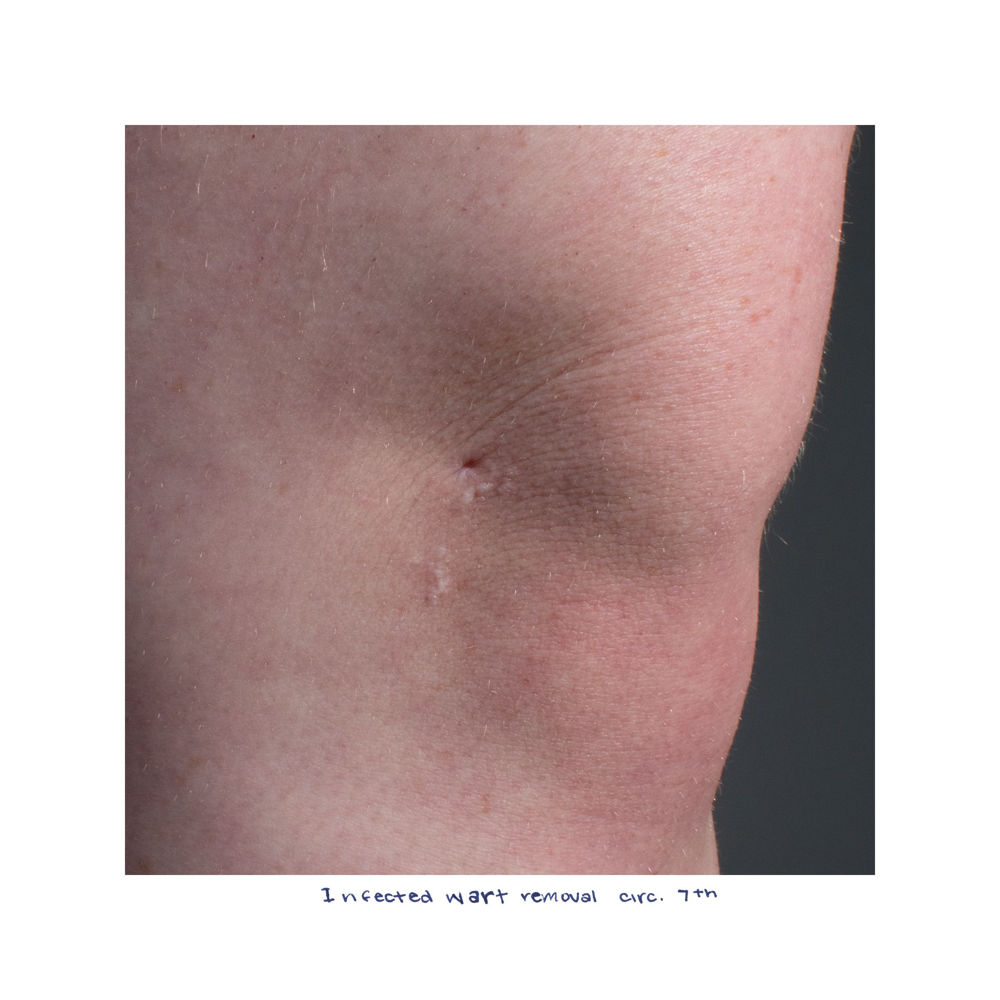
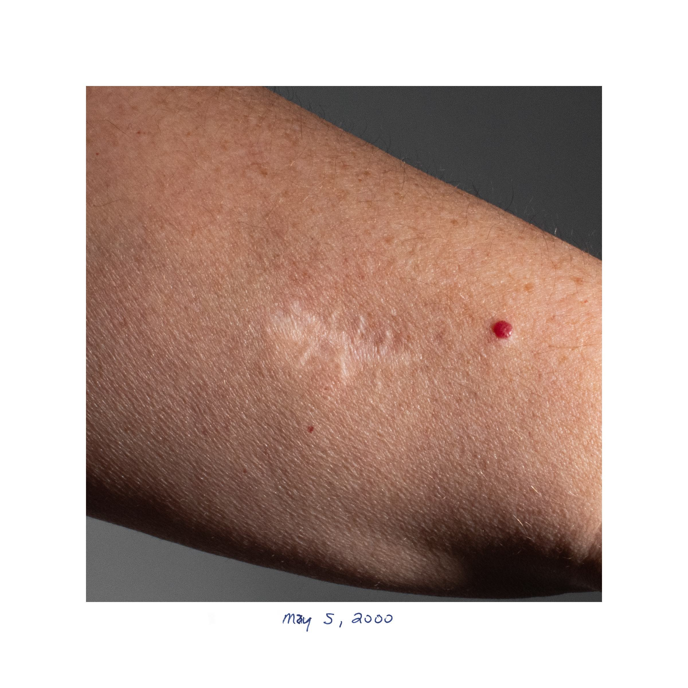

Charlie King
Scars
This series shows personal scars with handwritten captions under each photo. Each person wrote something about how or when they got the scar. The photos were taken up close to keep the anonymity and allow the scar to take center stage in the photo rather than the person and their personality. I wanted to photograph scars because they show an immense vulnerability and often hold emotional stories with them. While working on this project I learned so much about the participants and so much about their life just by photographing their scars.







